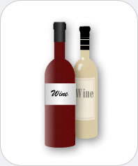

|  |
Wine
Chemicals you may find: Ethanol Tartaric acid Water Sulfite Resveratrol |
| Wine is a beverage that is produced via alcoholic fermentation from grapes, rice, barley, fruits or honey. In this process sugar is converted to alcohol. Ethanol works as a solvent to aid in the addition of the many ingredients that are responsible for the flavor and color the beverage. Often preservatives are added to wine such as sulfites to prevent premature oxidation. The flavoring of wine may also be accomplished through the aging of the beverage in barrels or bottles for years at a time. | |